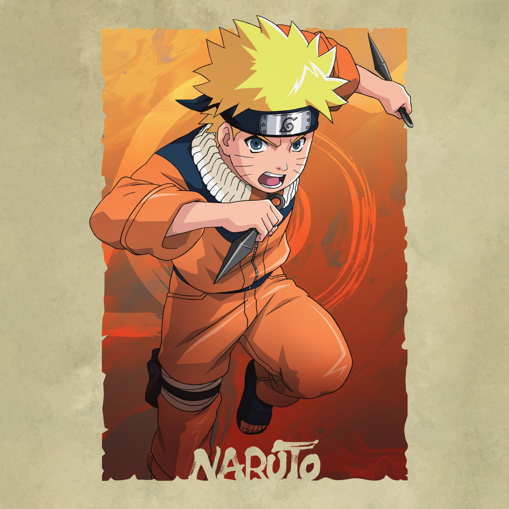
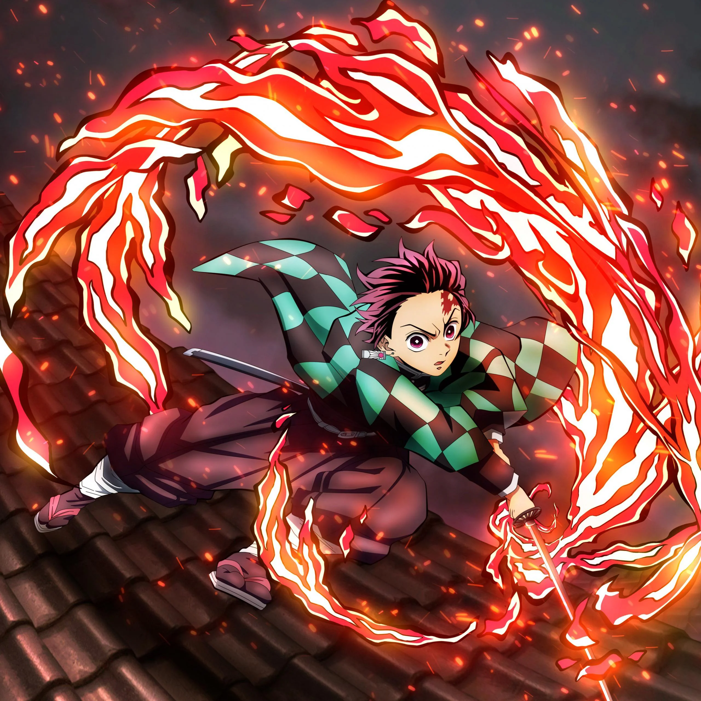
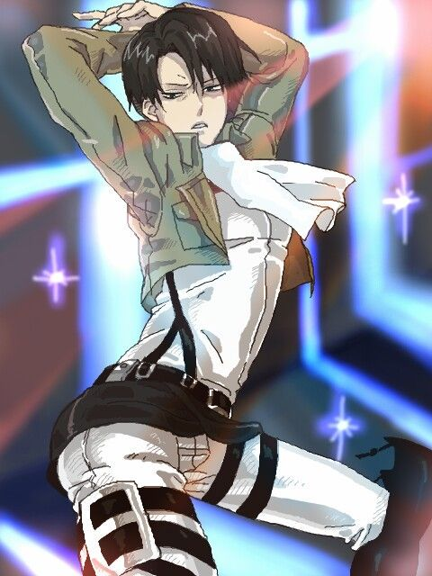
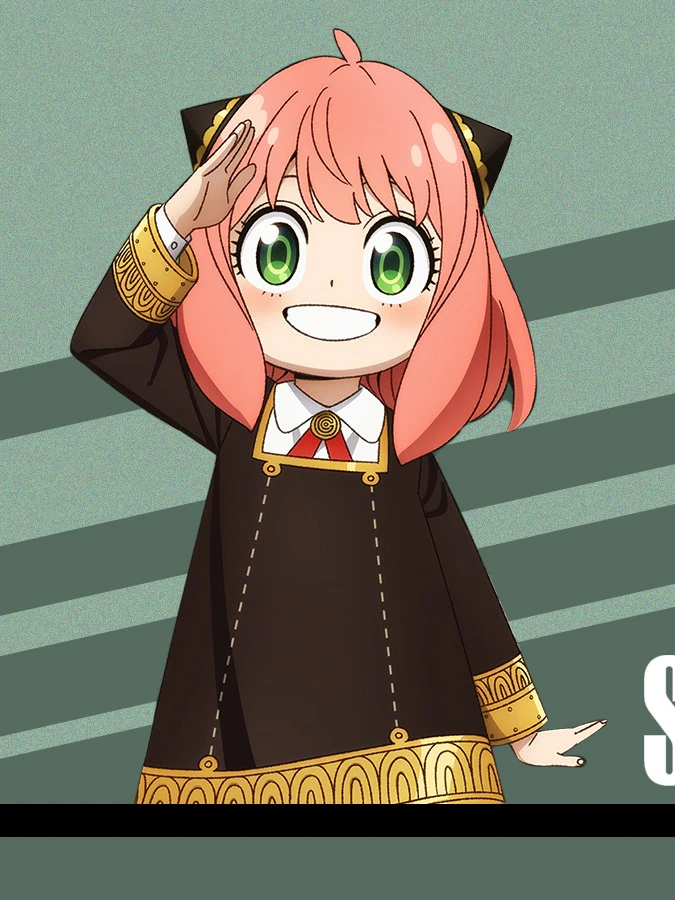
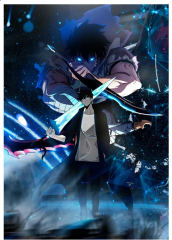

Naruto Uzumaki
Anime: Naruto
Description: Naruto is a determined ninja from the Hidden Leaf Village who dreams of becoming Hokage.
Brave Optimistic
Monkey D. Luffy
Anime: One Piece
Description: Luffy is the cheerful captain of the Straw Hat Pirates who dreams of becoming the King of the Pirates.
Adventurous Free-spirited
Gojo Satoru
Anime: Jujutsu Kaisen
Description: Gojo is one of the strongest sorcerers, known for his great power and confident personality.
Powerful Confident
Tanjiro Kamado
Anime: Demon Slayer
Description: Tanjiro is a kind demon slayer who fights to protect others and save his sister.
Kind-hearted Compassionate
Levi Ackerman
Anime: Attack on Titan
Description: Levi is humanity’s strongest soldier, admired for his combat skill and discipline.
Cool Disciplined
Anya Forger
Anime: Spy x Family
Description: Anya is a funny and lovable child with telepathic powers.
Cute Telepath
Sung Jin-Woo
Anime: Solo Leveling
Description: Sung Jin-Woo rises from the weakest hunter to one of the strongest.
Smart Responsible
Doraemon
Anime: Doraemon
Description: Doraemon is a helpful robot cat from the future who supports Nobita with amazing gadgets.
Friendly Robot Cat